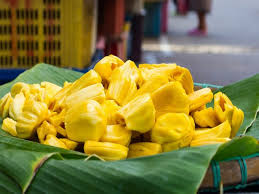
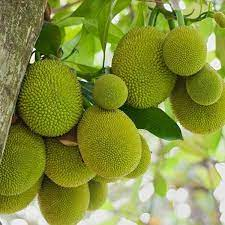

Type: Traditional / Local
Where it is grown: Mostly in Tamil Nadu (Salem, Dharmapuri, Krishnagiri, Erode districts) and parts of Kerala & Karnataka.
About: The Velipala jackfruit is a traditional variety known for its large-sized fruits and sweet golden-yellow bulbs. The tree is medium to tall with a strong canopy, suitable for rainfed as well as irrigated conditions.

Type: Traditional / Local (GI-tagged variety)
Where it is grown: Exclusively grown in Panruti, Cuddalore District, Tamil Nadu, and surrounding areas.
About: The Panruti jackfruit is world-famous for its unique sweetness, aroma, and year-round fruiting ability. The trees are medium to tall and produce fruits multiple times a year due to the region’s climate.

Type: Hybrid
Where it is grown: Cultivated in several states of India – mainly Kerala, Karnataka, Tamil Nadu, and Andhra Pradesh – through research station releases and farmer-level adoption.
About: Hybrid jackfruit is developed by crossing high-yielding local varieties to combine the best traits. The trees are medium-sized, start bearing early, and produce fruits with uniform quality.